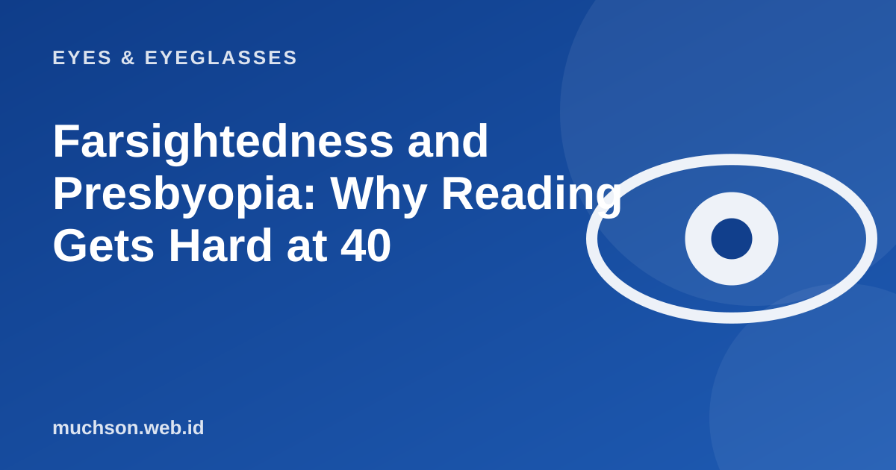

Home › Articles › Eyes & Eyeglasses
Eyes & EyeglassesFarsightedness and Presbyopia: Why Reading Gets Hard at 40
The text on a restaurant menu suddenly blurs, and you reflexively hold your phone further away. If it happens around your 40s, it is most likely not that your eyes are failing: it is a natural process called presbyopia. Below is how it works, and a simulation to feel the difference from farsightedness.

Presbyopia is not a disease
Inside the eye is a clear lens that can thicken and thin to adjust focus. When looking up close, the lens thickens. As we age, the lens becomes stiffer and the muscle that adjusts it less effective, so the ability to focus up close declines. Almost everyone goes through this process, usually noticeable at around 40 to 45, and it keeps increasing until about the 60s.
Text description of the diagram
- Children: The lens is very flexible. Focusing on very near things is no trouble.
- 20s: Still very good. Reading complaints are rare.
- 40s: Starting to show. Small print needs to be held away, the eyes tire quickly.
- 50s: More noticeable. Usually extra reading power is needed.
- 60s: Tends to stabilise. Change slows, but checks are still needed.
Farsightedness and presbyopia: often confused
Both use convex (plus) lenses, so they are often taken as the same. Yet the causes and treatment can differ, and a person can have both at once. That is why the prescription figures need to be checked in person by an eye doctor or optometrist.
Signs you may have presbyopia
Glasses options for presbyopia
| Option | How it works | Suits |
|---|---|---|
| Reading glasses (single vision) | One power for reading distance | People who only need them for reading; taken off to see far |
| Bifocal | Two parts: top for far, bottom for reading, with a dividing line | People who want one pair and are used to the line |
| Progressive | Power changes smoothly from far to near with no line | People who change viewing distance often, who need an adjustment period |
Ready-made reading glasses are cheap on the market, but their power is the same for both eyes and ignores differences or cylinder. If your right and left eyes differ, glasses made from an eye test are more comfortable and do not tire your eyes quickly.